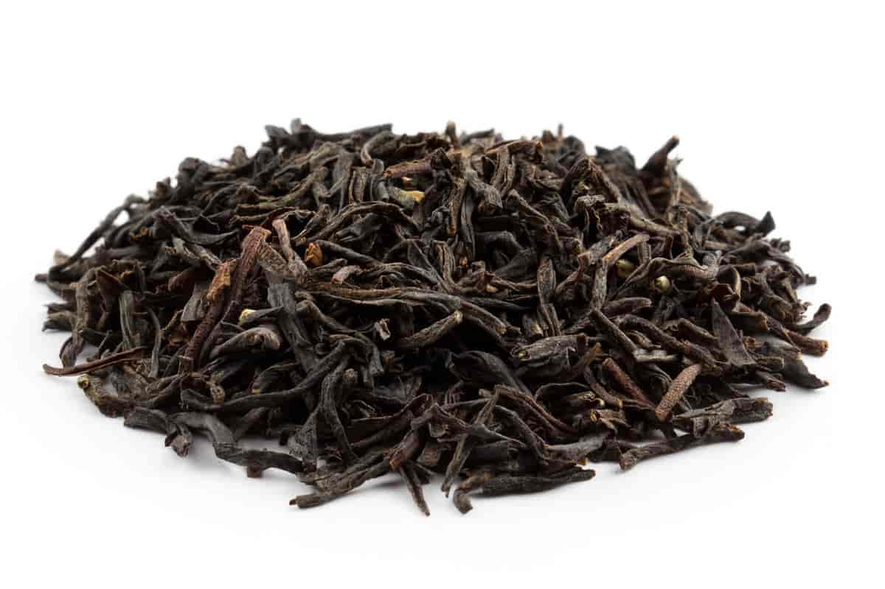

Tea
Black tea

Black tea
is one of the most widely consumed teas globally.
It undergoes full oxidation during processing, which gives it a robust flavor and dark color.
Popular varieties include Assam, Darjeeling, and Earl Grey.
Black tea is known for its boldness and is often enjoyed with or without milk and sugar.
It's a comforting choice for many tea enthusiasts, offering a rich and invigorating experience.
Green tea

Green tea
, revered for its health benefits, is minimally processed, preserving its natural color
and antioxidants. With origins in China, Japan, and other Asian countries,
green tea comes in various types such as Sencha, Matcha, and Dragon Well. It boasts a fresh,
grassy taste and a lighter color. Often consumed without additives, green tea is celebrated
for its delicate flavor profile and potential health-promoting properties.